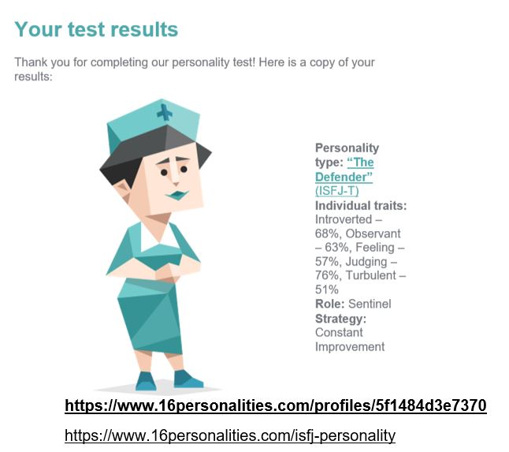
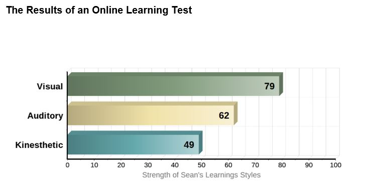

Assessment Two : Team Project
Repo URL: https://github.com/RMIT-SubAtomic/Assessment-two-Team-Project
Website URL: https://rmit-subatomic.github.io/Assessment-two-Team-Project/
Contents
What Is Meta Foods? A Quick Overview.
The Who And The Why. Our Motivation.
The How And The Now. A Description.
https://rmit-subatomic.github.io/Assessment-one-My-Profile/
Meta Tier Solutions - Team Leader
I am an Australian born citizen with Argentinien family background, I left school halfway through year 12 to commence a traineeship as a Network Technician with a small local business on Yorke Peninsula, I then moved on from that role due to personal reasons and headed back into the hospitality game, there I was able to travel around Australia and manage different hotels for a number of years. While traveling I had the opportunity to study a number of boating certificates to gain employment in the shipping trade, but that fell short, as I found my beautiful wife who I have been with for 10 years and counting.
https://mattwilsonrmit.github.io/S3826711/index.html
ID- s3826711 || Meta Tier Solutions – Frontend DevOps
I am a 30-year-old single father from Queensland whose hobbies include writing music, gaming and programming. My interest in IT began at a young age after playing video games and building my first computer, but it didn't truly flourish until my late 20's during my work in a technical role within a CCTV program.
I believe this passion for IT is the result of a combination of the freedom for creativity it can offer and the ever present and changing problem solving aspect of the industry. The room left for further innovation feels near infinite, the possibility for us to all leave our footprint of humanity is very much available to those of us passionate to pursue a career within Information Technology.
I have experience working within a government organization contributing to front-end web design and development along with general troubleshooting and maintenance on equipment and software.
Student Number: s3735706
RMIT Email: s3735706@student.rmit.edu.au
Website URL: https://s3735706.github.io/
In this section about myself I have added more personal information about me, that I didn’t think to add in my original website. I was born in Adelaide South Australia. My mother was born in the UK she was raised in India, my father was born in Switzerland he was Swiss French, my culture is mainly British despite the cultural diversity. I completed year 11, Cert 2 and 3 in security, Cert 2 in fitness and did a diploma in IT. One of my hobbies is Tarantula keeping. I had kept thirty different species of Australian Tarantulas. I started a group on Facebook for reptile’s invertebrates and amphibians. I have a cat her name is Bella I raised her from a six-week- old kitten. In my spare time I do weight training, cycling, reading and playing sims 3 on pc. I am the youngest of five in my family, my life wasn’t an easy one I was brought up in a very religious strict environment. I broke away from the religious environment which lead to me being disowned. I had to form a new life without family support. I have lived in Sydney and Melbourne, I lived in Sydney for 12 months and I lived in Melbourne for 6 years. I have a partner who lives in Cardiff Wales and I am working towards moving over there after I complete my studies. I have travelled overseas to England, Germany, Amsterdam, Singapore, Vanuatu, New Caledonia and Thailand. I leave in four weeks to Wales to see my Fiancé. I reside in Adelaide South Australia; I live in the city itself which is handy for me as I don’t drive. I am one of those people you will see at a local café enjoying a latte perusing social media or reading the paper. Our team name is Meta Tier Solutions we came up with the group name based around our project we decided the name together in a team meeting. We wanted a team name that sounded professional.
https://s3828158.github.io/index.html
S3828158, Team: Meta Tier Solutions
I originally come from Dublin, Ireland and my Irish accent is one of the things people notice about me. My father mentioned I was good at technical things so suggested I look into working with computers. I was one of the first people to have a home pc in my class so was pretty good in computer classes and assisted the teacher with instructing other students. I completed my year 12 equivalent in Ireland and started doing a programming course, but while walking through the local shops, a friend of a friend mentioned he was starting a computer hardware course so I dropped out of programming and did that. This gave me some good opportunities such as being able to travel to Florida for a couple of months as part of study work over there. After the course I got a position working with upgrading the Dublin health service government computers for the incoming Euro currency and Y2k changeover. Though it was a term project, I was able to impress my supervisor that I was asked to come onboard as a helpdesk agent in the IT call centre and while working with this organisation for several years I moved onto lab repair work and then onto fieldwork, driving around to different locations solving issues. I then relocated to Australia, I again got a job working in IT desktop support which I’ve been doing for the last 14 years. I’ve now moved away from the day to day desktop work to a mid-level role supervising the desktop support person, providing backup for the system administrators and working on various projects. I’ve got a curious nature and I’m always looking into new technology and trying to improve my knowledge with new things. I’m also a typical gamer, playing a variety of PC games, Xbox and mobile platform games. As a family man, I encourage my kids to explore and try out new things so they can have a variety of choices as they get older. Although my background is strongly hardware side, I’d like to get back into the programming/coding side of IT work and that’s why I started with Open University/RMIT to see what the next step for me will be.
https://khudson-debug979.github.io/
Team: Meta Tier Solutions
My first interest in IT was a young kid playing Doom and Quake. I wondered what made this wonderful machine work the way it did. I'm very interested in networking and hardware; building custom computers is something I enjoy. I;d love to build my own server, but currently lack the funds. I eventually got my own second hand computer and wrecked it within a week. Being a very experimental child, I deleted System32; after all, it was taking up so much space. When I was young, I ended up in foster care several times and one of the best places I ever stayed with was with my primary school IT teacher and his family. The efforts that family went to still blow my mind. I became who I am because of them. My teacher/foster father instilled a love of computers and IT that has lasted my entire life. I don't have much IT experience beyond clearing viruses from friends laptops and building my own PC. I tried to learn programming myself a few years ago, but I struggled with C++ and gave up after a couple months. I chose RMIT because it is well known for being great for IT. I figured I would pick the school with the best reputation for IT that I knew of. To be fair, I never gave it much thought. Somebody on Reddit messaged me when I was struggling and gave me the encouragement to enrol and get started, so I jumped in feet first and now, here we are. I'm hoping to become a competent programmer and learn more about networking, though I expect the total sum of knowledge I acquire to be much greater by the end of my studies. I don't really know exactly what my dream job would be, but I've been leaning more towards becoming a network engineer more than anything else.
-Doug Barrett, Matt Willson
Doug Barrett Test Results
Myers-Briggs: INTJ
Learning Style: Visual Learner
Big 5 Personality Test: Openness 51, Conscientiousness 40, Extraversion 60, Agreeableness 1, Natural Reactions 87
Matt Wilson Test Results
Myers-Briggs: Logistician – ISTJ-A
Learning Style: Visual Learner
Cognitive Speed Test: 58.9/100
Sean Cullen Test Results
Myers-Briggs: ISFJ-T
Learning Style: Visual Learner
Creativity Test: 54/100
John Rehill Test Results
Myers-Briggs: ISTJ
Learning Style: Visual Learner
Big 5 Personality Test: : Openness 44, Conscientiousness 52, Extraversion 10, Agreeableness 54, Natural Reactions 56
Kyle Hudson Test Results
The Results
Myers-Briggs - The Advocate personality
Learning Style Test - Auditory style learner
Field of View test - Score was 11.3 when the average is 49.1
Sean Cullen
Doug Barrett- Cyber Security
Matt Wilson- Web Application Development
Sean Cullen- Web Application Development
John- Software Development
Kyle Hudson- Network Engineer
Compare and Contrast the Ideal Jobs for Each Person in the Group
There is a variety of roles within the group which some are the same and some are different. Matt and I being Sean want to do Web Application Development. Doug’s ideal job is Cyber Security, Johns is Software Development and Kyles is Network Engineer. The common elements between Cyber Security, Software Development, Network Engineering and Web Application Development all use programming and require analytical skills. Network engineers also need programming skills to use the new tools and the new programmatic access. But the requirements of network engineering and the job market are now requiring more network engineers with programming skills and a broader and deeper understanding of programming along with analytical skills.(Anon, 2020)
As a web developer, you'll need to understand the basics of coding and mark-up language, JavaScript. As you master HTML and CSS, eventually you'll want to learn JavaScript, Photoshop, WordPress, Analytical Skills, SEO and Responsive Design.
(Classifieds.usatoday.com, 2020)
The common elements that these roles is the use of programming and analytical skills. What differentiates the roles are:
Cyber Security: is the practice of defending computers, servers, mobile devices, electronic systems, networks, and data from malicious attacks. Network security is the practice of securing a computer network from intruders, whether targeted attackers or opportunistic malware. (Kaspersky.com.au, 2020)
Software development: is an iterative logical process that aims to create a computer coded or programmed software to address a unique business or personal objective, goal or process. Software development is generally a planned initiative that consists of various steps or stages that result in the creation of operational software. Software development is primarily achieved through computer programming, which is carried out by a software programmer and includes processes such as initial research, data flow design, process flow design, flow charts, technical documentation, software testing, debugging and other software architecture techniques. This is known as the software development life cycle (SDLC).
(Techopedia.com, 2020)
Web Application Development: Web application development is the creation of application programs that reside on remote servers and are delivered to the user’s device over the Internet. A web application (web app) does not need to be downloaded and is instead accessed through a network. An end user can access a web application through a web browser such as Google Chrome, Safari, or Mozilla Firefox. Most web applications can be written in JavaScript, Cascading Style Sheets, and HTML5. Web application development will typically have a short development life-cycle lead by a small development team. Front-end development for web applications is accomplished through client-side programming. Client refers to a computer application such as a web browser. Client-side programming will typically utilize HTML, CSS and JavaScript. HTML programming will instruct a browser how to display the on-screen content of web pages, while CSS keeps displayed information in the correct format. JavaScript will run JavaScript code on a web page, making some of the content interactive. Server-side programming powers the client-side programming and is used to create the scripts that web applications use. Scripts can be written in multiple scripting languages such as Ruby, Java and Python. Server-side scripting will create a custom interface for the end-user and will hide the source code that makes up the interface.
(SearchCloudComputing, 2020)
Network Engineer: focuses on delivering high-availability network infrastructure to sustain the online and on-site information technology activities of users. Network engineers often overlap with other roles, such as computer network architects or security systems engineers, and work internally within an organization or as outside consultants. Network engineers design and implement network configurations, troubleshoot performance issues, carry out network monitoring and configure security systems such as firewalls. They often report to a CIO, chief information security officer and other line-of-business leaders to discuss and decide upon overall business goals, policies and network status updates. In many situations, network engineers work closely with project managers and other engineers, manage capacity and carry out remote or on-site support.
(SearchNetworking, 2020)
The career plans for Myself (Sean) and Matt will be similar, Doug, Kyle and Johns career plans will be quite different as they have different IT job roles they want to pursue. Researching each job role programming come into all of them as well as analytical skill
Sean Cullen
GitHub is a website and cloud-based service that helps developers store and manage their code, as well as track and control changes to their code. To understand exactly what GitHub is, you need to know two connected principles: version control and git. Version control helps developers track and manage changes to a software project’s code.
(Kinsta Managed WordPress Hosting, 2020)
Version control enables developers to safely through branching and merging. version control lets developers safely work through branching and merging. With branching, a developer duplicates part of the source code called the repository. The developer can then safely make changes to that part of the code without affecting the rest of the project. Then, once the developer gets his or her part of the code working properly, he or she can merge that code back into the main source code to make it official. All these changes are then tracked and can be reverted if need be.
(Kinsta Managed WordPress Hosting, 2020)
GitHub is a for-profit company that offers a cloud-based Git repository hosting service. Essentially, it makes it a lot easier for individuals and teams to use Git for version control and collaboration. GitHub’s interface is user-friendly enough so even novice coders can take advantage of Git. Without GitHub using Git generally requires a bit more technical knowledge and use of the command line.
(Kinsta Managed WordPress Hosting, 2020)
W3Schools is an educational website for learning web technologies online.[1] Content includes tutorials and references relating to HTML, CSS, JavaScript, JSON, PHP, Python, AngularJS, React.js, SQL, Bootstrap, Sass, Node.js, jQuery, XQuery, AJAX, XML, Raspberry Pi, C++, and Java. Created in 1998, its name is derived from the World Wide Web, but is not affiliated with the W3C (World Wide Web Consortium).[2] It is run by Refsnes Data in Norway. (En.wikipedia.org, 2020)
W3Schools has focus on simplicity, practicing easy and straight-forward learning. We use simple code explanations and illustrate how to use it. The tutorials start from basic level and move all the way up to complete professional references. W3schools presents thousands of code examples. By using an online editor, you can edit examples and execute computer code experimentally, to see what works and what does not, before implementing it. W3bschools is a completely free developers’ resource.
Atom is a free and open-source text and source code editor for macOS, Linux, and Microsoft Windows with support for plug-ins written in Node. js, and embedded Git Control, developed by GitHub. Atom is a desktop application built using web technologies.
(En.wikipedia.org, 2020)
A text editor is at the core of a developer’s toolbox, but it doesn't usually work alone. Work with Git and GitHub directly from Atom with the GitHub package. Create new branches, stage and commit, push and pull, resolve merge conflicts, view pull requests and more—all from within your editor. Atom comes pre-installed with four UI and eight syntax themes in both dark and light colours. Install themes created by the Atom community or create your own. It runs on Electron, a framework for building cross platform apps using web technologies.
(Atom, 2020)
Notepad ++ is a text editor and source code editor for use with Microsoft Windows. It supports tabbed editing, which allows working with multiple open files in a single window. The project's name comes from the C increment operator. Notepad++ is distributed as free software. At first the project was hosted on SourceForge.net, from where it has been downloaded over 28 million times,[2][3] and twice won the SourceForge Community Choice Award for Best Developer Tool.[4] The project was hosted on TuxFamily [fr] from 2010 to 2015; since 2015 Notepad++ has been hosted on GitHub.[5] Notepad++ uses the Scintilla editor component.
Notepad++ is a free source code editor and Notepad replacement that supports several languages. Running in the MS Windows environment, its use is governed by GPL License. Based on the powerful editing component Scintilla, Notepad++ is written in C++ and uses pure Win32 API and STL which ensures a higher execution speed and smaller program size. By optimizing as many routines as possible without losing user friendliness, Notepad++ is trying to reduce the world carbon dioxide emissions. When using less CPU power, the PC can throttle down and reduce power consumption, resulting in a greener environment.
(Notepad-plus-plus.org, 2020)
CodePen is an online community for testing and showcasing user-created HTML, CSS and JavaScript code snippets. It functions as an online code editor and open-source learning environment, where developers can create code snippets, called "pens," and test them. It was founded in 2012 by full-stack developers Alex Vazquez and Tim Sabat and front-end designer Chris Coyier. Its employees work remotely, rarely all meeting together in person. CodePen is one of the largest communities for web designers and developers to showcase their coding skills, with an estimated 330,000 registered users and 14.16 million monthly visitors. CodePen is a web-based HTML, CSS, and JavaScript code editor that enables its users to experiment with code right in the browser. It is an open source learning environment, displaying a live preview of the code changes. It can be used for testing out bugs, collaborating, and finding new inspiration. It works by allowing users to create “pens”, which are sets of HTML, CSS, and JavaScript. Users can then display those pens on their profile, take feedback, and continue to edit those pens at any time.
(Base, 2020)
Simple, intuitive, and innovative user interface
Every feature and user interface element was designed to be immediately intuitive and quickly learnable without assistance. In order to handle multiple images easily, Paint.NET uses a tabbed document interface. The tabs display a live thumbnail of the image instead of a text description. This makes navigation very simple and fast. The interface is enhanced for Aero Glass if you are using Windows 7. Extensive work has gone into making Paint.NET the fastest image editor available. Whether you have a netbook with a power-conscious Atom CPU, or a Dual Intel Xeon workstation with 16+ blazingly fast processing cores, you can expect Paint.NET to start up quickly and be responsive to every mouse click. Usually only found on expensive or complicated professional software, layers form the basis for a rich image composition experience. You may think of them as a stack of transparency slides that, when viewed together at the same time, form one image. Paint.NET has an online forum with a friendly, passionate, and ever-expanding community. Be sure to check out the constantly growing list of tutorials and plugins. Updates are free, and contain new features, performance improvements, and bug fixes. Upgrading to the latest version is very simple, requiring only two clicks of the mouse. Many special effects are included for enhancing and perfecting your images. Everything from blurring, sharpening, red-eye removal, distortion, noise, and embossing are included. Also included is our unique 3D Rotate/Zoom effect that makes it very easy to add perspective and tilting. Adjustments are also included which help you tweak an image's brightness, contrast, hue, saturation, curves, and levels. You can also convert an image to black and white, or sepia-toned. Paint.NET includes simple tools for drawing shapes, including an easy-to-use curve tool for drawing splines or Bezier curves. The Gradient tool, new for 3.0, has been cited as an innovative improvement over similar tools provided by other software. The facilities for creating and working with selections is powerful, yet still simple enough to be picked up quickly. Other powerful tools include the Magic Wand for selecting regions of similar colour, and the Clone Stamp for copying or erasing portions of an image. There is also a simple text editor, a tool for zooming, and a recolour tool. Everybody makes mistakes, and everybody changes their mind. To accommodate this, every action you perform on an image is recorded in the History window and may be undone. Once you've undone an action, you can also redo it. The length of the history is only limited by available disk space.
(Brewster, 2020)
Sean Cullen
What are the Job Titles for your Group's Ideal Jobs?
Our groups ideal jobs are Cyber Security, Web Application Development, Software Development and Network Engineer. How do each of these rank in terms of demand?
Web Application Development
In the Labour Insight Jobs (Burning Glass Technologies) Web Application Development is ranked 381 in terms of demand, Software Developer is ranked 337 and Network Engineer is ranked at 666 (Top IT Jobs, Burning Glass Data)
According to The Bureau of Labour Statistics, employment within the web design field is expected to grow 27% by 2024. This is much faster than the average projected growth rate across all other occupations. The field of web design is expected to grow as more transactions shift from in-store to online. Companies are catching on to the trend that consumers are glued to their smart devices. Thus, increased use of mobile devices will boost the demand for mobile-first websites that are highly responsive and visually appealing. This will result in an increased demand for highly skilled web designers to create such sites.
(Kruse, 2020)
Cyber Security
Due to the shortfall in the demand and supply of cyber security professionals, companies are going above and beyond to acquire the best talent in the cyber security sector and reward them accordingly. This space is going to see an exorbitant growth in the next 5 years, and demand for professionals in this sector will continue to rise. Here are some reasons why your decision to choose a career in cyber security will be secure and profitable: Job Security: According to recent stats, the global shortage of cyber security professionals is going to reach 3.5 million by the end of 2021. There is no doubt that the career outlook for cyber security students is going to be very bright with many opportunities available. Salary Raise: Due to the unique high demand skillset the cyber security professionals offer to the industry, salaries are never a constraint. A cyber security professional in Australia will earn an average salary of $75k – $120k per annum and is expected to increase. Choice of Industry: Today, almost all industries are demanding cyber security professionals. Those who have expertise in this area can choose from a wide range of industries to work in. Due to the increase in demand, Australia is facing a severe skills shortage in the cyber security sector. This shortage is responsible for more than $400 million in revenue and wages lost. Australia is currently short of 2300 workers in cyber security, with an expected demand of at least 17,600 additional professionals in the sector by 2026. Businesses are looking for professionals with a combination of technical skills with expertise in data security along with the understanding of business risk. Because of the unique skills cyber security professionals possess, companies are willing to pay higher salaries to these professionals.
Software Developer
Employment of software developers is projected to grow 21 percent from 2018 to 2028, much faster than the average for all occupations. Software developers will be needed to respond to an increased demand for computer software.
(Bls.gov, 2020)
The demand for programmers will increase exponentially over the next decade and the proof is happening right in front of you every single day. Developers are the people who are capable of building stuff for a world that is becoming increasingly more reliant on technology. That’s why the demand for developers is only going to increase more and more over the next ten years. The data backs this up. According to the U.S. Bureau of Labour Statistics, software developer jobs are expected to grow 17% from 2014 till 2024. They categorize this growth as “much faster” than the average rate among other professions. It’s not just Facebook, Google, and Uber that need developers. Almost every single industry is becoming dependent on people who know how to write code.
(Alexander Baker, 2020)
Network Engineer
The growth of about six percent is expected in the employment of network engineers, from 2016 to 2026. The demand for network engineers has increased over the last decade as companies have expanded their IT networks. Designing new networks or upgrading current ones will continue to create new opportunities for network engineers. Additionally, the increase in healthcare information technology will further add to network engineering opportunities. Overall, the employment outlook for new network engineers is very favourable. Jobs in the field outnumber candidates, keeping the unemployment rate for network engineers around zero. One of the biggest reasons that there is a shortage of workers in the network engineering field is that organizations are looking for highly qualified, educated, and experienced IT professionals. Typically, companies require network engineers to have at least a bachelor’s degree, while master’s degrees are preferred. Many companies also require candidates to have specific network certifications and years of experience. Organizations are looking for network engineers because today’s networks and systems have become increasingly complex as technology advances. Depending upon the specific position and company you work for.
(Alexander Baker, 2020)
Your Group's Required Skill Set
General Skills
The general skills required are communication, problem solving, organisational, writing, teamwork/ collaboration, troubleshooting, planning, research, creativity and detail orientated, time management, leadership, mentoring, quality assurance and control, presentation, meeting deadlines, analytical, team building, management, multi-tasking, English, building effective relationships, articulate, self-starter and decision making. These are the top listed in the burning glass data. (Top generic skills, burning glass data)
IT Specific Skills
Web Application Development
SQL, JavaScript, Java, Microsoft Windows, Graphic Design, Technical Support, Microsoft C++, Linux, Customer Service, .Net programming, Website Production, Git, ITIL, HTML, CSS and Analytical Skills, SEO (Burning Glass Data Top IT Skills)
(Classifieds.usatoday.com, 2020)
Cyber Security
Intrusion detection, malware analysis and reversing, programming, C, C++, PHP, Perl, Java, system architecture, administration and management of operating systems, virtualization software, and networking, a well-rounded skill set with skills ranging from penetration testing, IOT security, network security, identity, and access management, to other cyber-governance related soft-skills, risk analysis and mitigation, cloud security and security analysis.
(Roussey, 2020)
Software Developer
Qualification / Certification, .Net programming, Git, SQL, Linux, Microsoft C++, Microsoft Windows, Java, JavaScript, Python, Oracle and ITIL (Burning Glass Data)
Data Structures and Algorithms, Programming Languages, Source Control, Text Editors, IDEs, Databases, Operating System, Networking Basics, Basics of Testing, Cross-Platform Software, Encryption and Cryptography, SDLC and Microsoft Excel.
(GeeksforGeeks, 2020)
Network Engineer
The skills required are to be able to work with LAN – Local Area Network, MAN – Metropolitan Area Network, WAN – Wide Area Network, WLAN -Wireless Local Area Network, GAN – Global Area Network, SAN – Storage/System/Server/Small Area Network, CAN – Campus/Controller/Cluster Area Network, PAN – Personal Area Network, DAN – Desk Area Network, VoIP – Voice Over Internet Protocol Network, Intranets and Extranets. The person must have a good understanding of hardware and network infrastructure. There are a lot of specialist courses that can enable you to get the skills and knowledge needed regarding networking certifications. Some of these include; CCIE (Cisco), CCNP (Cisco), JNCIE-ENT (Juniper), Network+ (CompTIA) and WCNA (Wireshark). Those who want to become wireless network engineers need to have experience in wireless equipment, protocols, standards, and wireless LAN design. They should have specialized in wireless technologies, including WiMAX, Wi-Fi, and WAP. They should ideally gain a professional certification like the Certified Wireless Network Professional. You need a qualification/ Certification in Network Engineering. Engineers should have solid analytical and problem-solving skills. They should also have excellent written and verbal communication skills.
(Fieldengineer.com, 2020)
How do the IT Specific Skills in Your Required Skill Set Rank in Terms of Demand from Employers?
SQL ranks number 1st at 3,570 which is the highest-ranking skillset, JavaScript is ranked 2nd at 2,946, Java is ranked 3rd at 2,860, Microsoft Windows is ranked 4th at 2,699, Graphic Design is ranked 5th at 2,068, Technical Support is ranked 6th at 1,830, Microsoft C++ is ranked 7th at 1,643, Linux is ranked 8th at 1,632, Customer Service is ranked 9th at 1,411, .Net programming is ranked 10th at 1,370, Website Production is ranked 11th at 1,366, Git is ranked 12th at 1,230.
How do the General Skills in Your Required Skill Set Rank in Terms of Demand from Employers?
Communication ranked 1st 44,367, problem solving ranked 2nd 16,445, organisational is ranked 3rd 15,844, writing is ranked 4th 15,590, teamwork/ collaboration is ranked 5th 14,364, troubleshooting is ranked 6th 11,471, planning is ranked 7th 11,315, creativity is ranked 8th 7,475, detail orientated is ranked 9th 8,298, research rank 7,227, leadership ranked 10th 5,144,time management is ranked 11th 5,059, mentoring is ranked 12th 4,538, quality assurance and control is ranked 13th 4,444, presentation is ranked 14th 3,716, meeting deadlines is ranked 15th 3,346, analytical is ranked 16th 2,997, team building is ranked 17th 2,985, management is ranked 18th 2,906, multi-tasking is ranked 19th 2,640, English is ranked 20th 2604, building effective relationships is ranked 21st 2,473, articulate is ranked 22nd 2,171, self-starter is ranked 23rd 1,984, decision making is ranked 24th 1,850.
(Burning Glass Data Top Generic Skills)
The three highest ranked IT specific skills which are not in your required skill set are; Business management, which is ranked 7th 2,141, Project Management which is ranked 5th 2,141 and Business Analysis which is ranked 9th 2,096. (Burning Glass Data Top IT Skills) The three highest ranked general skills that aren’t required are; research is ranked 10th 7,227, leadership which is ranked 11th 5,144, and mentoring is ranked 13th 4,538.
(Top generic skills, burning glass data)
Having Looked at the Burning Glass Data, Has Your Opinion of Your Ideal Job Changed? Why or Why Not?
Looking at all the data and research, my opinions of the job roles we want to pursue haven’t changed. These numbers and with the further research have shown growth in these areas that we are wanting to pursue. As Web Application Development, the skills that are needed and numbers are still high. Employment of web developers is projected to grow 13 percent from 2018 to 2028, much faster than the average for all occupations. Demand will be driven by the growing popularity of mobile devices and ecommerce.
(Bls.gov, 2020)
Software Development is still highly in demand. According to the U.S. Bureau of Labour Statistics, software developer jobs are expected to grow 17% from 2014 till 2024. They categorize this growth as “much faster” than the average rate among other professions. It’s not just Facebook, Google, and Uber that need developers. Almost every single industry is becoming dependent on people who know how to write code. According to the U.S. Bureau of Labour Statistics, software developer jobs are expected to grow 17% from 2014 till 2024. They categorize this growth as “much faster” than the average rate among other professions. It’s not just Facebook, Google, and Uber that need developers. Almost every single industry is becoming dependent on people who know how to write code.
(Forbes.com, 2020)
Researching about Cyber Security this is an area that is worth pursuing as a career in IT. The rising threat of cybercrime has led to an exponential growth in the Cyber Security Industry. “The global cyber security market was worth US$74.5 billion in 2015, and it’s estimated it will be worth close to US$170 billion by 2020”. The federal government of Australia has plans of investing over $230 million dollars into the cyber security sector in the next four years. Cyber security as a field has become a new opportunity for Australian businesses. Industries, researchers and government will come together to create enterprises to develop new products and services that will allow small- and large-scale companies to work securely in a connected world. After the growing concerns in the number of data breaches, the Australian government has passed a few data protection regulations that have caused a steep rise in the demand for cyber security professionals across the country. Due to the increase in demand, Australia is facing a severe skills shortage in the cyber security sector. This shortage is responsible for more than $400 million in revenue and wages lost. Australia is currently short of 2300 workers in cyber security, with an expected demand of at least 17,600 additional professionals in the sector by 2026. Businesses are looking for professionals with a combination of technical skills with expertise in data security along with the understanding of business risk. Because of the unique skills cyber security professionals possess, companies are willing to higher salaries to these professionals.
(Data, 2020)
Researching the prospects regarding to Network Engineering employment the growth of about six percent is expected in the employment of network engineers, from 2016 to 2026. The demand for network engineers has increased over the last decade as companies have expanded their IT networks. Designing new networks or upgrading current ones will continue to create new opportunities for network engineers.
(Cybrary, 2020)
The number of people working as Computer Network Professionals (in their main job) grew very strongly over the past 5 years and is expected to grow strongly over the next 5 years: from 31,600 in 2018 to 35,200 by 2023. Job openings can come from new jobs being created, but most come from turnover. There are likely to be around 17,000 job openings over 5 years (that's about 3,400 a year).
(The Australian Government, 2020)
It Professional Interview - Nathan Christos, Technical Officer for Logan City Council's Safe City CCTV Program
Today we had the opportunity to sit down with Nathan Christo, a senior technical officer with the Logan City Council's Safe City CCTV program to get a "boots on the ground" insight into what it is like working within the IT industry.
Nathan is a 34 year old tech, fitness and art enthusiast living on the Gold Coast in Queensland.
Married to his wife of 4 years and with a demanding job and social life, he manages to keep a
healthy balance of his passion for technology and the outside world.
What kind of work is done by the IT professional?
Nathan comes from an electronics background working within the electronic security field.
Over the course of his career this broadened into a position with network and systems administration responsibilities. Currently, within the Safe City Program, he has taken it upon himself to understand SQL along with aspects of Python due to how the Video Monitoring Software (or VMS) has been developed and deployed.
These new found skill sets coupled with his pre-existing knowledge of networking, systems and security enable him to easily move from one task to another, problem solving and troubleshooting, often finding a link between some of the issues that may have been missed if he did not possess an understanding of the various platforms they are developed on.
His job role simply requires him to install, maintain and educate himself on the latest in CCTV technologies in order to keep the program running and moving forward, though he is constantly trying to innovate himself. With this in mind, Nathan told me "You can't just go into any aspect of this field with a degree and the ability to just do one or two things. Even if you are hired for one job, you will always find crossover into other areas, like just the other day, the VMS was not allowing the staff to save footage from a single camera, turns out this is because the VMS was finding syntax within camera names like backslashes and trying to create subfolders as a result rather than save footage. At first glance you think it's one thing like, oh that has to be to do with SQL and maybe the camera ID, but it turns out to be something else entirely and you never would have gotten there without that experience and broad knowledge base to find that root cause."
Nathans work load seems to be extremely diverse when it comes to daily tasks and long term goals being worked on. There is something to learn from this and I feel something along the lines of "a desire to never stop learning" will be a key factor for anyone looking to dive into this industry.
-What kinds of people does the IT professional interact with? Are they other IT
professionals? Clients? Investors? The general public?
Early in his career, Nathan found himself mainly dealing with other IT professionals within businesses and organisations as he designed and implemented their access control and security solutions. Today, Nathan's current role instead sees him working predominantly alongside colleagues and stakeholders that in fact have little to no knowledge of how anything information technology related outside of their daily tasks performed on their desktop computers and their phones.
Nathan explains that navigating conversations with others who have a completely set of skills and professional experience in order to convey requirements to complete a task and sometimes, deliver less than desirable news about a project, can be difficult. It is up to him as an expert in his field to articulate all of his knowledge in a way that is on their level. A skill he believes he will never cease to continue working on.
-Where does the IT professional spend most of their time?
Nathan's job requirements will often have him working in the field of maintenance and the installation of new technology. As a result, tasks requiring work being performed in the office, are often conducted remotely through Remote Desktop Protocol sessions. This enables Nathan to investigate and sometimes even completely solve issues while out in the field with just his
mobile phone. So while Nathan does spend a majority of his time outside, he very much enjoys the time he does get to spend inside at his desk perfecting and developing the backend systems that keep the program running day to day.
-What aspect of their position is most challenging?
Security is, according to Nathan, always going to be one of the most challenging aspects of any role involving IT systems. He is forever working with the in-house ICT infrastructure to ensure a level of cyber security is maintained. Nathan described this task as "monumental" due to the nature of the network. The program operates on a MAN or "Metro Area Network" that spans roughly 950 square kilometres. This network is home to over 600 cameras overseeing
public, council and corporate assets, of which the police rely heavily on.
Though challenging, Nathan says that this being an open ended problem that evolves day to day, it is by far the most enjoyable to be apart of.
Doug Barrett
What Does it Do?
The tools and roles of a cyber security specialist are vast and can cover all sorts of areas ranging from security administrator, cryptographer, penetration tester, chief information security officer, forensic expert, source code analyzer, and an incident responder to name just a few roles, then The technologies involved in this area are state of the art and are ever evolving to fit the needs of the end user, if we look at the Linux OS called Kali for instance, this is a dedicated operating system that can be run straight off a USB drive that is designed just for penetration testers and network security analysts, then if we look at password cracking where people should be familiar with a hacking method known as a “brute force attack,” which relies on sequential guessing of all possible combinations of a character set in order to beat a password where that password might be protecting something as innocuous as someone’s email or as important as database-level access to credit card data, so with NVidia releasing an SDK to make the GPUs programmable that then pushed the capabilities to new heights giving even home users the ability to crack passwords There are tools that can scan an entire network and report on the vulnerabilities, host discovery, what operating systems are installed, finding open ports, and general firewall probing to see what can go through and what can't. This is all done by a single program called Nmap. Metasploit is another technology that is used throughout the cyber security realm, it is a tool in which a pen tester can load and inject known vulnerabilities or custom source code into a network to then test it for weak spots.(En.wikipedia.org, CUDA, 2020)
Cybersecurity is a fast growing field due to more and more things getting connected by what's now called the internet of things or IoT for short. If we take the role of a security specialist they would be tasked with protecting computers, networks, software, data or information systems against viruses, worms, spyware, malware, intrusion detection, unauthorized access, denial-of-service attacks, and an ever increasing list of attacks by hackers while using tools and technology to defend against it all.(En.wikipedia.org, 2020)
In the next few years there will be a huge jump in advancement of AI for cybersecurity technologies, what they will have to defend against, for example will be a huge range of new things like AI-bots that will pose a huge danger to online privacy, if that technology is used than computer driven AI chatbots can be used to social engineer vast amounts of people. They might start by using text messages but in the future they could use human speech bots to get users to click on malicious links or download files that would infect their systems and the victims would have no idea that they are talking to a computer, they would think that they are just talking to a person that they might know, or a family member. Another change that will come about in the next few years will be the advancement of quantum computing, that in itself will be a major change in the way cyber security will be approached. Everything will have to be changed to adapt to the massive processing power a quantum machine will be able to perform.
What is the Likely Impact?
What is the potential impact of this development?
There will be drastic changes in the way people will conduct themselves online with cybersecurity becoming a more mainstream topic. People already have started taking an interest in better password practices by using longer and more complicated passwords and also using password managers, more people have been opting out of a lot of software and internet services that tracks your presence online. People have been using better antivirus and firewall technology, VPN services have become a normal part of everyday internet usage, even encryption technology has become a major part of daily internet usage.
What is likely to change?
Everything will change when it comes to cybersecurity, as encryption gets broken there will be new standards that will arise out of that and be adopted by everyone, there will be major data breaches, either from a nation state attack or from an individual attacker, but wherever it comes from will cause people to look at how it was caused and change their practices to suite. Technology will become more advanced and from those advancements will spring new forms of attacks and vulnerabilities for cyber security administrators, penetration testers or forensic experts to tackle.
Which people will be most affected and how?
Security administrators, cryptographers, penetration testers, forensic experts, source code analyzers basically the whole field in cyber security will be the most affected, as they will have to learn and keep up with all the changes that will take place as the technology advances. There will also be a lot of victims due to weakness and vulnerabilities found in systems causing loss of personal data, identify theft as well as financial thief, then there are people's privacy rights that will get affected as governments and big tech become more advanced in monitoring and harvesting data on people.
How Will This Affect You?
As a small business owner in the IT sector changes in the cyber security sector will affect my job immensely, whether it be in the form of making sure my own website is secure and free of any hidden malicious code that could affect any customers using my online payment services, installing software on new computers that I would build for clients in order to keep them safe while browsing the internet at home, all this in turn might increase my overheads then that will ultimately be passed down to the customer costing them more for my services.
What will be different for me?
Depending on how things turn out in the near future in regards to laws being past that will jeopardize my online rights to privacy, or it be a new technology emerging that will break the fundamental laws of encryption, that mainly being quantum computers then nothing much will change for me as I am one to keep up with the weekly threat reports, the occasional data breach that exposes a fundamental flaw in some widely used system.
How will this affect members of your family or my friends?
Threats to cybersecurity will always be a challenge to my family as having three children I can not stress enough how important it is at home to be aware of any threats or even online harassment to my children, and I fear it is only going to become worse as time progresses and more and more of life's aspects become online dependent.
Doug Barrett
What Does it Do?
When people refer to the cloud they are really referring to the internet and storing data, and or accessing services and hardware online, they offer so much in the way of computing services that everything can now be achieved via the Cloud, without the need to buy any expensive equipment or spend ages in setting up services yourself, you can just rent what you need and have it up and running in less than a minute in some cases. There are three main cloud services that are available to end users,
IaaS
Is Infrastructure as a service,
And it is helpful for business and single users in giving them the ability to expand and control their own data infrastructure without having to go out and buy all the equipment necessary. Let us say for example you want to host your own websites and don’t want to buy all the equipment necessary to host a reliable website, or your home internet connection is not the best. By using AWS or Amazon Web Services you have access to all the equipment and software you need to host a website with reliable services a limited downtime.
PaaS
Is Platform as a service,
PaaS is a cloud computing service where a third party would provide you with hardware and access to software tools, let us just say that if you wanted to develop some type of application and you didn’t want to buy the hardware and software, or don’t have access to the hardware and software you need, then you could sign up to Google App Engine and access cloud-based services for your application and help you develop it.
SaaS
Is Software as a service,
Software as a service is something that might be of interest to you, It is just a way of being able to access software over the internet so you don’t have to go out and buy the whole package, for example, if you only wanted to use a word processing piece of software then you could access google docs over the internet saving you money on stuff you really don’t need when you purchase something like office 365.
(Bernazzani, 2020)
The technology is becoming more advanced and so in the near future we will be seeing a huge improvement in storage capacity for one, as there is becoming a huge demand to be able to store large amounts of data securely and quickly without the need to purchase large storage servers and then the costly venture of setting them up as well, second as the technology of cloud computing advances so will the performance of the internet, as users store more and more data into the cloud the more complex it is and in turn the technology behind serving that data back to customers becomes better and therefore that improvement can be used to improve the internet as a whole. Cloud computing has also given developing countries access to infrastructure and education without the need to invest in expensive equipment to get the services up and running. Cloud computing has also improved our health care system, giving doctors access to patient’s information from a centralized location, eliminating the need for bulky paper work having to be transferred around to each clinic the patient wishes to visit, this then reduces operational costs due to the data being stored in one centralized location giving any medical professional with the clients consent access to his or her data. The cloud is changing the way we use technology and also how we access information.(Ibm.com, 2020)
What is the Likely Impact?
What is the potential impact of this development?
With cloud computing becoming more and more popular, data centers will become a huge part of the IT scene leaving a lot of in house jobs redundant. People will be out sourcing their data storage or serving needs to a third party. Also another major impact of cloud computing is giving people a way of reaching everyone, making the internet a much more social place, also giving everyone access to the information they need via a few mouse clicks in turn, making anyone into an instant news reporter, famous screen star, or one of the most dangerous ones an instant doctor.(Ferkoun and Ferkoun, 2020)
What is likely to change?
The most likely thing to change in terms of cloud computing is the adobtion of DaaS which is Desktop as a Service, and that soon there will be no need for business to go out and buy new computer towers, as they will be able to access workstation hardware like we access major infrastructure hardware today. Companies will only have to go out and buy a monitor, keyboard, mouse and a basic desktop tower then use the cloud to handle all the compute functions, this way companies can have up to date software no matter what computer the employee is using and with the added advantage of having easy deployment of applications.(Future of Everything, 2020)
Which people will be most affected and how?
There will be a lot of in house jobs affected in large companies and even small business due to the fact that most computing services will be outsourced to a third party. But that will then drive the need for new data centers to be built, or the existing data centers to expand and take on more staff.
How Will This Affect You?
Cloud computing has a huge affect on myself, as I own a small computer repair and general IT shop. I have produced a few websites for clients as well as my own, and when it comes to deploying those websites and deciding whether to spend money on building my own server and hosting them that way, or go with the cloud I choose the cloud, and in particular I had chosen Amazon Web Services for the simple fact that in today's world it makes no sense to spend money on hardware and resources when it can be accessed through the cloud.
What will be different for me?
My whole business strategy will be changing to accommodate using the cloud and the services it has to offer. Moving all my data onto a reliable and secure server that will have multiple redundant sources if ever one server was to go offline is a great tool for any business which stores a lot of valuable data. With the cost of renting server space and hosting websites and applications from them decreasing, will give me access to a whole new market and bring in additional income.
How will this affect members of my family or my friends?
With everything becoming online and through the cloud will bring its problems to the older members of my family, as things will get complicated quickly for them as the technology changes, but that being said for the younger generation it will be an amazing experience to see what we will be able to accomplish through the cloud in the near future and just how different the internet will be.
Kyle Hudson
What does it do?
A Raspberry Pi is a small credit card sized, single board computer designed by the Raspberry Pi Foundation in the UK. Originally designed to promote the teaching of basic computer science in schools and developing countries. It plugs into a computer or monitor to provide display. These days, a Raspberry Pi can be used for almost anything you can imagine. People have made everything from audio devices that can play music from spotify all the way up to building their own laptop or phone with a Pi as the main board. The sky's the limit really. Wifi enabled robots that can be controlled via a web browser or a game console controller, home security systems and even real time facial recognition systems have been designed and built with a Raspberry Pi. It can utilize a multitude of operating systems, including multiple Linux distros and Windows 10 IoT Core. It ships with its own linux version, called Raspbian. In its current state, a Raspberry Pi is a computer, and is capable of almost anything a computer can do; with a much lower price point. Newer models boast USB 3.0, ethernet connectivity, and the latest mode can even output to a pair of 4k displays simultaneously. Power is delivered via USB-C to the device. In the future, as hardware gets smaller and more powerful, the Raspberry Pi will be capable of even more. Smarter robots, more robust software and more connectivity with the Internet of Things (IoT). It is a fantastic educational device, and demand is growing for this exciting product. Schools, hobbyists and hospitals have all shown interest over the years. The next model may even be fast enough to replace your basic desktop pc, but memory and storage is still an issue. Arduino is similar to Raspberry Pi in that it is a very small, single board computer with a lot of capability. Arduino boards can read inputs like a button being pressed or light on a sensor and turn that into an output, like a written message, a blinking LED light or even activating a program to post a tweet for instance. They are cheap, and like the Raspberry Pi, it was originally aimed at students with no prior knowledge to be used as a learning device. Everything from a blinking LED light to complex scientific instruments have been created using Arduino boards as the brain of the device. In the future, Arduino hopes to become a much bigger part of the IoT and with a partnership with Intel on the horizon, its cheap prototyping capabilities are going to be even more useful and accessible. An example I've seen was Arduino based home electronics that will allow the user to control the device's functionality in new ways; changing how their microwave heats their food for instance. With easier prototyping, and the modularity of the Arduino, upgrading home electronics or creating your own systems will become much simpler. Some people have already connected an Arduino board to a Raspberry Pi to take advantage of the functionality of both devices to receive inputs from the Arduino and output the results or program to the Raspberry Pi. I can see this functionality getting much better in the next few years as engineers, students and hobbyists keep pushing the limits of these devices. All of this is only possible with the rise of incredibly cheap, and tiny pieces of hardware that are only getting easier and cheaper to produce. These amazing devices have grown exponentially over the last 5 years and now sell millions of units per year, further funding development to improve and upgrade the hardware.
What is the likely impact?
The impact of these devices can not be understated. While both were originally designed as learning tools for students with little to no experience, the modularity of the devices and ability to execute many custom programs has drawn interest from many other sectors, including restaurants, hospitals, government bodies and universities. These devices will be the brains of the next generation of IoT devices, and as such will become a part of many people's daily lives. Having cheaper, easily upgradeable hardware could make ordering food at a restaurant as simple as using a touchscreen menu and having the chef directly receive your order. As automation becomes more commonplace, there will be less face to face interaction and more simple computer systems running everything from the lights in a restaurant, to keeping track of a hospital patients treatment records. As these devices get cheaper and more powerful, and more people with experience decide to go into teaching as a career, expect these devices to be everywhere; classrooms, homes, schools, hospitals and businesses are all in a great position to take advantage of the this technology. The Internet of Things keeps growing, and these simple, powerful devices are leading the way to an interesting new world of automation and computing.
These devices could make many simple, easily programmable jobs completely redundant, which has always been a concern of automation critics. We see this already, with places like McDonalds taking most in store orders through automated systems that require no employee interaction. Automation isn't to be feared though, society is changing, and we as humans need to change and adapt with it, or be left in the past. Something to be concerned about is our digital privacy, and data protection. While these devices can be used to protect you, they are also another potential entry point for malicious users to attempt to subvert our systems and steal our data.
How will this affect me?
These devices could have a multitude of effects on me. As someone interested in emerging
technologies, I want to see how I can use devices like this in my own life; whether I want to embark on various Raspberry Pi projects to connect to the Internet of Things all the way to building my daughter a simple word processing laptops. Many of my friends and family will be affected by this technology as well. Jobs may become obsolete, or easier. Keeping our homes and private data secure is becoming increasingly difficult, and these devices can either help or harm our attempts at digital privacy.Several people in my family use simple electronics in their work, and these cheap devices could make their jobs easier to manage, while raising productivity. Having a fully connected home can make simple daily tasks simpler or easier to keep track of, but a power outage or an internet connectivity issue could see us losing control of our homes. With everyone in the modern world is becoming more interested in the power of home computing and connectivity, education about these devices and necessary security when going online is more important than ever. With a home connected and run by these devices, the risk of personal and private information being stolen by nefarious parties becomes even more likely. But these devices can also help secure our information, using programs and firewalls outside of our usual computer based protections. Digital privacy should be everyone's concern in this day and age, And these devices are both a boon and a menace when it comes that protecting ourselves online.
John Rehill
What does it do?
Machine Learning as a basic concept is the process in which a machine can analyze a set of data and from this dataset can evaluate and predict possible outcomes of this data. With traditional uses of computers and machines, specific instructions would be written for a task and the machine or device would perform that task as preprogrammed. Deviation from the preprogrammed path was not possible.
This would later evolve into the IFTTT, or ‘If This Then That’, model. A machine would not only be given a set of instructions to perform but an additional set of instructions could be included that would either supplement or replace the first set of instructions based on conditions such as environmental factors or other known elements or scenarios.
Over time the concept evolved that rather than have a programmer or user predict such issues or possible paths and then develop a long list of subroutines to the primary one, the machine would be able to understand at what point a change would need to be made and differ from its main programming. This became the basis of artificial intelligence, the process of a machine thinking like a human. However, the ability of a machine to do calculations given a wide variety of data and possible outcomes much quicker and easier is quickly apparent. The time taken for a human to gather data, collate it into an understandable and useable format, process the possible outcomes and produce a likely outcome can be vastly reduced by using a machine to process the data. In most cases, this would be easier as the data itself when collected is in a machine structured format so rather than the information being converted, it could be used as-is. Also, the machine can retain much more information and recall information more quickly than a human can.
Machine Learning used to be a concept that could only be used on large mainframes of systems by organisations that can access data and process it. The collection of data was done remotely and then transported to the mainframes to begin the analysis. However, with the evolution of technology, the concept of Machine Learning is now developed to the point that home consumer devices such as cars and mobile devices such as phones can include the technology that allows them to do the processing in the local state and only need to upload the data to a larger mainframe when required. This type of predictive behaviour is not only limited to physical devices but also used for services such as online streaming content. As a user watches a show or a collection of movies the data from this viewership is collated and based on this information, predictive analysis can determine what other content that can be viewed would appeal to the user and therefore specific content can be targeted to the person. This increases the value of such a service to the consumer.
As technology continues to evolve, and with more and more data being retained for later analysis, Machine Learning can be applied not only for an end-user consumer benefit but also for such things as ecological impact, environmental predictive analysis such as earthquakes and volcano eruptions and weather prediction. Machine Learning is also being turned towards such concepts as political voting outcomes and other sociological events.
What has made technology such as this possible is the development of large-capacity storage, software to organise such data and the ability to quickly transfer data as required from one information silo to another for better-refined investigation.
What is the likely impact?
There are many occasions where Machine Learning can be used for both the positive and negative impact of humankind. For example, the analysis of earthquakes in the past and what factors such as minute tremor detections that proceed the main event would enable scientists to better predict when an earthquake may occur. It would also enable them to predict what the actual impact of an earthquake may be on a location not only from and environmental impact with animals that may live there and physical location details but also what the financial impact of such a disaster would be. This would extend to the development of improved manufacturing materials and designs for buildings in this area, the better coordination of relief efforts and the better prediction of global economic impact. This can also be true for weather prediction. By gathering data on previous weather patterns, and an analysis of this, more refined and accurate predictions can be made. This would impact on the long-term planning for such things as farming efforts and transport patterns such as plane and boat travel.
The opposite is also true for such things as political voting outcomes. With a detailed look of previous voting records and the various issues that come up for discussion in debates, political candidates can better tailor their response platform to appeal to a voting demographic in order to secure an election win or in the case of dictatorships, to isolate possible threats to an established regime and work to eliminate it.
The use of Machine Learning in this way could be seen as a negative as there may become the case that access to a valuable data resource would be only possible to certain individuals or organisations and the ability to use the data effectively for analysis may be restricted by financial aspects.
How will this affect you?
The possibilities used by Machine Learning is not something that probably can be quantifiably felt by a single person as yet, due to the vast nature of the processing required. For example, Machine Learning is currently being applied to the development of self-driving cars. The ability for a machine such as a car to react and thing like a human is still bound by current restrictions placed on it by, in some cases, illogical humans. Some laws govern how a car should be driven on the road but there is an element of common sense or selfish sense when it comes to driving. After a long hard day at work, it would be good to just get in a car and have it drive home however there may be instances, where junctions will not be crossed as the data for that area, indicates a high crash rate due to careless driving so the car may be more cautious. Where Machine Learning is starting to be used more is with the processing of pictures taken with camera phones. With the more expansive modern phones, several images will be taken and the device will be processing them to analyse ones where there is less blurring, someone has their eyes closed etc. and will then present the most appealing to the user. I enjoy playing computer games as a few of the group members do and one aspect where Machine Learning will come into play is to detect the skill aspect of the gamer and to adjust the game to account for that. This means that the replay value of a game goes up as the machine will change behaviour based on previous gameplay, increasing or decreasing the challenge.
Another aspect where Machine Learning would be more relevant in my daily life would be with streaming services. As I watch shows and movies and my family does, the service will show more akin shows and movies. This will provide a more enjoyable experience when using the service.
Matt Willson
The proposed project was for a functional web application that functions similarly to “Dinnerly” or “Hello Fresh” pre-prepared food delivery service except it is entirely online and is looking to lead an untapped industry into a consumer focused means of convenient and affordable eating and living.
"A focus on more than just food" is what META Foods is all about. Today, more than ever we are scraping for more minutes in the day after work and before bed to spend more time with our families and decompress. While many of us, myself included, find cooking very relaxing and fulfilling, often it is the last thing we want to do at the end of what was potentially a long day. This feeling of "I have to cook tonight" is no doubt heightened when it's a mammoth task to find something everyone in your house will not only eat, but will nourish and sustain them.
This is where META Foods comes into the picture, providing everyone from all walks of life a means of easily having affordable, delicious and healthy meals every night of the week.
The cooking is still up to you (we aren't quite there yet) but we have taken care of doing all of the thinking for you when it comes to meeting your entire families dietary requirements, health goals and taking grocery shopping out of the equation while still supporting your local supermarkets.
We are all fathers, brothers or sons and some of us have fairly strict dietary requirements and a desire to try and eat healthy along with family members or friends who potentially need a large variety of different foods to help their growth and development. We believe there is a gap in the market where convenient, affordable and accessible meals are concerned.
When it comes to easily meeting the "food needs" of a family or yourself this is especially true with busy lives involving work, hobbies and family. Services like "Hello Fresh" and "Dinnerly" seek to streamline the process of finding a recipe, grocery shopping, food preparation and cooking. They do succeed with making this easier but they do not allow for a lot of variations to meet different needs within a single order and (at least for me personally) these are not financially lucrative for a whole family.
This application seeks to take food from an idea to your plate using local super markets and good old fashioned family cooking combined with industry knowledge to bring you something affordable, delicious and healthy that you have tailor made for your situation.
Imagine you are about to go grocery shopping, but you have no idea where to even start because your partner cannot eat gluten and requires iron-rich meals, your eldest is vegetarian and lactose intolerant and you are trying to cut back on carbs while attempting to cater for everyone else’s needs and still enjoy your food. The first and most obvious thought is that you will need to shop for three people individually.
This application will endeavour to allow users to easily generate recipes and meal plans for any number of days based on dietary requirements, weight goals and gym goals. The GUI will essentially provide a means to use specific filters (most are briefly mentioned below) to provide the user with a list of recipes, all with methods and cooking instructions that will allow for the creation of meals and snacks. All of this will be done from the ease of any computer or smart device as META Foods has been developed as a web-based application allowing ease of access and focusing on a user centred design philosophy.
What went well
As a group we were able to quickly decide on a team leader and a project idea for us all to focus on, giving us more time to actually complete the project. With a focused team that was well lead, we were in a great position to succeed, and it showed with how quickly we were able to come together and get things done.
What could be improved
Communication in some cases was lacking, but Douglas made a very effective team leader, which allowed us to overcome the minor communication issues presented by a minority of group members.
At least one thing that was surprising
It was surprising just how quickly we rallied together to get this project done quickly with as many people as possible involved. Our team's ability to overcome minor issues was extremely helpful and made the project run smoothly.
At least one thing that you have learned about groups
One of the things I have learned about working in groups is the difficulties that can be imposed by members personal lives and the problems caused by lack of communication. In the real world, lack of communication can cause severe and expensive setbacks to projects with a deadline that needs to be met.
What went well
I had joined the group early one during the coursework but since collaboration at this stage was not required, I hadn’t reached out to group members and they didn’t realise I was a member of the group until the group activity had begun. However, once I reached out to the group members, they immediately took me on board with no issues and we’re all very friendly. This made it very easy to get over any nervousness about not being part of the initial work. Everyone was very clear and when each person was working on and each member was ready to put their hand up for tasks to do or to offer support to team members.
What could be improved
Due to the online nature of the group, everyone had to deal with online communication rather than face to face or getting everyone in one room at the same time. Everyone was very understanding if someone had to leave a team member or couldn’t make it but when working on a project it’s better if the team could be near each other. However, with this course setup, that is not possible so it’s not a fault of the team, it’s just an observation, the team worked around this issue.
At least one thing that was surprising
Everyone seemed to have a ‘can do’ attitude and was ready to get to work. There also seemed to be a natural slot for group members with one person sliding into the leadership role and that made the rest of the team realise that he could be an effective leader and throughout the project, he led quite well.
At least one thing that you have learned about groups
I am more used to dealing with a team project although I am fond of the tools presented to groups to be able to work remotely which each other. This became highly apparent and there are now some tools that I previously only used for myself or for one to one interaction but I can now see the benefit of using them with group projects.
What went well
As a team we work very well together, we all chose Douglas to be team leader for the group. Douglas has made a very good team leader; he has all the right skills to fulfil this role. We as a group just naturally gravitated towards him for help or advice. What went well was how we pulled together as a team, there were no arguments we just did what was assigned to us. Team members committed to their assigned tasks and completed them within a reasonable timeframe. I also found what went well was how everyone managed to stay focused during the holiday period. It is easy to lose that momentum after a holiday. We managed to keep the work flowing through the holiday period. We also kept up communication during this assignment through discord and we had team meetings which went well because everyone was there, we could communicate concerns, take note on where we are at and discuss how we are working as a team.
What could be improved
The communication could be improved, sometimes it was lacking a couple of team members, but Douglas as a good team leader resolved these issues by means of conflict resolution. Apart from those things we worked well as a team we flowed smoothly together.
At least one thing that was surprising
What surprised me was how we came together as a team when it needed. I had experience working in a team environment and at first, I was a bit worried about how we would work as a team. But to my surprise we rallied together to get tasks done.
At least one thing that you have learned about groups
One of the things I have learned about working in groups is how one person’s actions affect us all. For example, if one person is delayed in submitting a task then it affects the flow of everybody’s workload, as somebody else must take on the extra task. Also, how if a member of the team doesn’t communicate at all it leaves you in question on how to tackle an assignment or task. For example, they might not like certain ideas the group has but the rest of the team won’t know unless they communicate within the group, which makes it very difficult.
how well you think your GitHub log of activity reflects your group’s work on this assignment?
Our GitHub log of activity we updated regularly with what we did or changed. We would push n pull the files to Douglas then he would have a look at it and initiate the final commit. We have a chain of command so there weren’t final commits done without others knowing. Doug and Matt had the authority to do the commits the rest of us pushed the files through n merged. GitHub reflects our groups work activity quite well we are able to see through this by pulling the file and looking at what was done and we could see what needed to be done, it is very handy if we aren’t on at the same time. Doug did a lot of work on the repository setting it up and pushing and pulling of files, we only pushed through files that were completed, prior to pushing through we would all have a look at what was done to make sure everyone was happy then we would push it through. It saves the amount of times we need to push n pull which takes valuable time.
What went well
From the start of week two we had a group selected and ready to go bar two, where one dropped out of contact, the other was put in a different group due to not assigning himself to ours via canvas, from that we received a new team member that has fit in really well with our group. We have all really bounded together well, there has been no arguments everyone has pulled their weight even when there has been some really difficult personal situations come up.
What could be improved
There is not much I would change except for better communication, it’s not that it was lacking its just that I think this whole online group project was a very new experience for a lot of us, and getting used to communicating via chat logs for most of the time can get very tedious and confusing.
At least one thing that was surprising
One thing that was surprising was how well the lot of us fit in with each other and if we really where a team outside of studying, I think we would be very successful.
At least one thing that you have learned about groups
One thing that I have learned about working in groups and especially being a team leader is how satisfying it can be helping other people.
What went well
We all seemed to fall into roles within the group that fit our personalities and strengths and without argument. Doug really took charge of things answering any questions we may have had, Sean really did an excellent job of keeping everyone on track almost like an assistant team leader, John did an amazing job contributing even though there was a huge misunderstanding with him being added to the team, Kyle also made incredible contributions despite his personal circumstances restricting the time he could interact with us.
What could be improved
Honestly, this is a hard one for me. Everything that went wrong we seemed to be dealt with. You could say communication needs to be improved except that it was actively worked on throughout the process.
At least one thing that was surprising
We all seemed to have some pretty serious personal issues and speed bumps outside of this online world and everyone came together as an actual team. This was surprising because I was not expecting to find this level of comradery. The guys were truly there for each other giving real emotional support for real world problems, some even providing financial support.
At least one thing that you have learned about groups
I was honestly anxious about my assignment results being in the hands of others and as a result, apprehensive about group work.
This team really showed me that have a group who are behind each other and committed to everyone getting good results, there is significantly less pressure on you as an individual.
While this may seem obvious looking in, I was only looking at this from a negative perspective, this team really changed that for me.
What went well
Despite communication issues, despite team members moving house or dealing with financial difficulties, we pulled together well. Doug was an excellent team leader, and he made sure everyone in the group knew what their task was. We chose early on to elect a team leader, and his natural charisma and drive to lead us to success paved the way for us to do well. With one team member leaving and another joining us a bit late, we would expect some difficulties, but every challenge was met and overcome. Our workflow ran extremely smoothly, allowing us to focus on the project and deliver it on time.
What could be improved
Communication issues were something that we all had to deal with. Some members weren't always available, and it did create some strain. It was very easy for us to overcome these challenges with Doug leading the way. We honestly don't know how else to improve, as we rolled right over every challenge in our path. We believe communication was our one big issue, and it still couldn't prevent us from working well together and getting the project completed.
At least one thing that was surprising
The biggest surprise was how well we came together to complete this project. We didn't just see each other as classmates, but very quickly became friends. There was everything from emotional to financial support and it was very obvious that we were in this together. The attitude of our team members was excellent, despite the setback of a team member having to drop the course suddenly and another not actually being in our group due to not joining the group on Canvas.
At least one thing that we learned about groups
The first thing we learned about working in groups is that group work isn't as bad or stressful as many of us thought it would be. After all having your grades in someone else's hands can be daunting. Though group work does have it's issues; waiting on team members to deliver on promised work was a struggle, as the rest of the team is wondering if they're going to be doing that task tomorrow instead. Many of us didn't realise how useful some of these workflow management tools could be, and had previously ignored them. We won't make that mistake again.